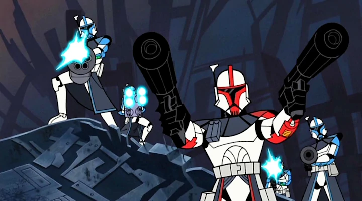

Fordo, el ARC Trooper ARC-77 destinado a Operaciones Especiales es una unidad de élite creado en las primeras remesas de clones, fue asignado a una fuerza de ataque liderada por el General Caballero Jedi Obi-Wan Kenobi, para tomar el mundo de Muunilinst, controlado por los Confederados. Junto con un grupo de soldados clones que después serían conocidos como Los 10 de Muunilinst, Fordo probó ser esencial en la Batalla de Muunilinst, llevando a sus soldados a destruir el emplazamiento de artillería enemigo, y luego ayudó a Kenobi a capturar al líder oponente, San Hill.
Inmediatamente después de la batalla, Fordo fue enviado a Hypori, donde un grupo de Caballeros Jedi fue atrapado por el general Confederado de los Separatistas, Grievous un temible cyborg capaz de aniquilar a pelotones de Jedis el sólo. Abriéndose paso hasta la ubicación de los Jedi, Fordo y sus hombres se enfrentaron a Grievous, pero no pudieron matarlo. Sin embargo, tuvieron la oportunidad de rescatar a tres sobrevivientes: Ki-Adi-Mundi, Aayla Secura, y Shaak Ti. En 19 ABY, Fordo estaba en Coruscant cuando el planeta fue atacado por la Confederación. A pesar de enfrentar números abrumadores, Fordo y sus hombres pudieron hacer retroceder a una porción de la fuerza atacante con la ayuda de los Maestros Jedi Mace Windu y Yoda.
Servió como capitán Comando de Reconocimiento Avanzado en la película The Clone Wars 2003
